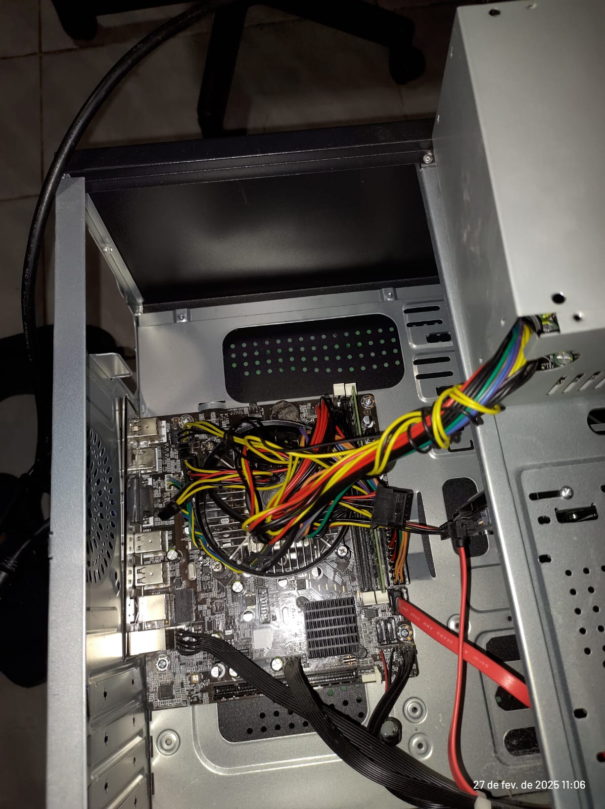
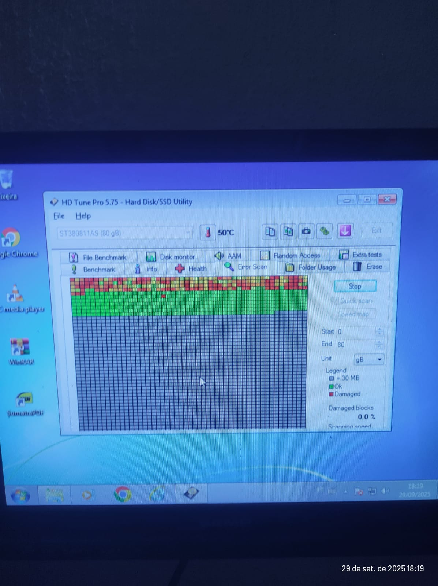
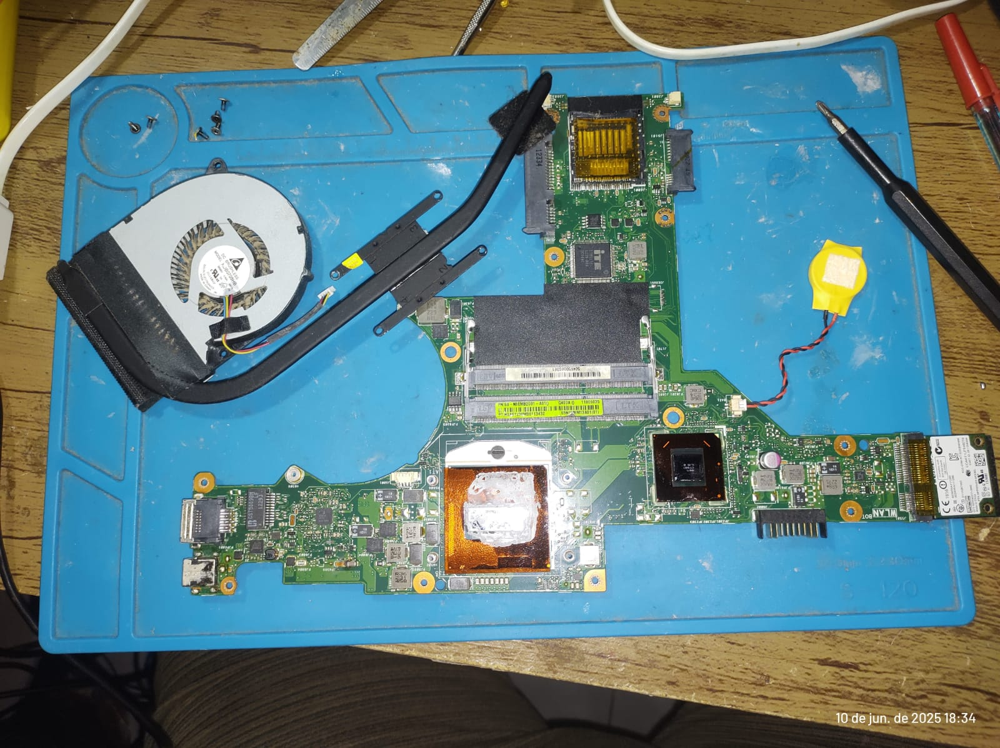

Limpeza e Otimização
Removemos vírus e otimizamos o sistema.
Removemos vírus e otimizamos o sistema.
Instalação de Windows e drivers.
Troca de peças e melhoria de hardware.



Especialistas em TI focados em eficiência e segurança.